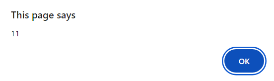
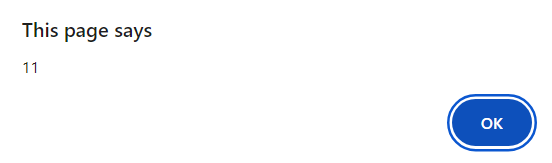

Professional Skills
 


Java Script Task 1
On one of the first lectures regarding Java Script we had few little tasks we needed to make to see how the basic Java Script is working. In one file I included all of tasks
we had during that lecture and separarted them with the space columns between them. The first task was to see the result of basic equasion in an appearing window. Next one
was to see what will happen if we type inside of console the same equasion, the result have been seen inside of the console. Next one was more complicated equasion but the
result was still shown in the appearing window, it was mainly to show that there are possibilities to make more complicated equasions in Java Script. Next One was to show
that we can provide the data in the Java Script and see it only if we mention the key word in console. And the last one was using not only java script but html as well and
was to show us that we can connect java script with html by using button and also that by clicking the button the date and time can appear on the website.
Those examples relate to the Development Learning Outcome because in them I am learning the Java Script which is esential for web development and it is also the most valuable
part of the Development Learning Outcome to learn how to use Java Script.